id="js_content" style="">
今天，中国最应该感谢的是近代来华宣教士。
是他们呕心沥血、四处筹款为中国兴办教育。
在他们所建的学校里，女子可以上学、修够学分便可毕业、全英文教学、中西并举、兼容并蓄，为中国现代教育做出了不可磨灭的贡献。
无数大师不仅在这些学校里汲取了现代政治、经济、科技养分，同时建立了坚定的信仰，并带着从信仰而来的勇气和爱心救中国于水火之中。
中国教育走到今天，我们不应该忘恩负义，那段历史藏着中国现代教育的源头，观照它们的创始人、校训、办学理念以及一丝不苟的工作态度，我们就会发现中国当今教育的问题。
我们要真正进步，必须要正视历史，而不是被妖魔化、被删减的历史洗脑。
要实事求是的看待近代史，并不是所有的外国人都帮过中国，也并不是所有的外国人都要侵略中国，我们不能笼统定性，那只会让我们盲目自大。
因此我暂停一次电影介绍，为大家普及那段历史，因为内容极多，我只能选取代表性的大学为大家介绍。
如果大家想要了解更多，可按照下面图片的目录自行百度、google。
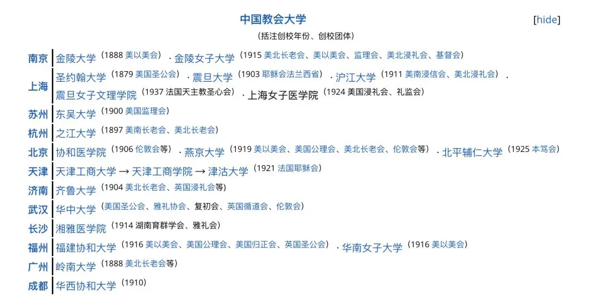
以下内容主要根据维基百科、知乎、相关论坛整理而来，有些地方暂时未找到准确资料，欢迎大家在留言处补充。
-01- 圣约翰大学
历程：
1879年圣约翰书院在上海成立，创始人为美国圣公会上海主教施约瑟，办学初期设西学、国学和神学三门，用官话和上海话授课。
1886年年轻的卜舫济牧师出任校长，时间长达52年，对圣约翰的发展发挥了很大的影响。
1887年，卜舫济开展英语授课，这是中国首个全英语授课的学校。
1905年，圣约翰书院正式升格为圣约翰大学，并在美国首都华盛顿注册。
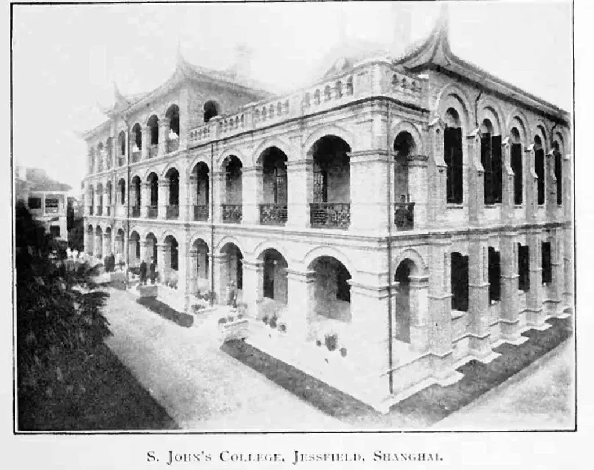
圣约翰大学是首个将西方教学风格引入中国的学校，设文、理、医三个学院，成为获得美国政府认可的在华教会学校，圣约翰大学被称为“东方哈佛”。
1906年以后，圣约翰的毕业生还可以进入美国各大学深造，耶鲁大学、哈佛大学、哥伦比亚大学等名校甚至同意免试招收，所以吸引了大批学生报考。
圣约翰大学的入学考试非常严格，长达6天，每天上午9点到12点，下午1点到4点。
每年录取人数不定，超过及格线都录取，不及格则都不录取，没有既定名额，圣约翰大学一年级不分专业，都上基础课，二年级分文理科。
学校体育设施完善，这里还诞生了中国历史上的第一支足球队，圣约翰大学足球队。
其他的学生组织、活动也十分多，包括许多十分活跃的左派学生团体，曾十分活跃地参与了五四运动等政治运动。
1936年开始招收女生，后来发展成为一所拥有5个学院（原来的4所加上后来的农学院）16个系的综合性教会大学，是当时上海乃至全中国最优秀的大学之一。
1937年中日战争爆发后，圣约翰大学曾将学校迁往公共租界里的南京路，与沪江大学、东吴大学、之江大学、金陵女子文理学院五校组成上海联合基督教大学。
1950年12月，圣约翰大学正式宣布与美国圣公会脱离关系。
1952年在全国高校院系调整中，当时中国的教育政策是模仿苏联，大量削减综合性大学，改办专门学院，原有教会学校多数被拆分。
圣约翰大学当年被解散，硬体设施也被拆散并入上海多所高校，按照并入院系数量排序，依次是华东师范大学、复旦大学、同济大学、上海财政经济学院、华东政法学院、上海第二医学院。
其中文、理学院主要并入华东师范大学和复旦大学，圣约翰医学院与震旦大学医学院、同德医学院合并成立上海第二医学院（后改名为上海第二医科大学，2005年改为上海交通大学医学院）。
上海圣约翰大学校董会主席欧伟国联同其他教会大学前高层，前往香港另行设立崇基学院，以示对中国教会大学之传承。
1963年，崇基学院并入香港中文大学，成为港中大三所基本书院之一。
校友：
圣约翰大学拥有许多著名的校友，曾对中国20世纪的历史进程起到过重大影响，其校友多活跃于中国商界、政界、外交界、教育学术界和医务界，知名的校友包括了：
顾维钧、宋子文、严家淦、林语堂、荣毅仁、邹韬奋、周有光、凌道扬（林业学家、崇基学院及联合书院第二任校长）；
法学家史久镛；外交家施肇基；政治家俞大维、俞鸿钧、锺士元、鲁平、钱李仁；教育家张伯苓、孟宪承、张建邦、马约翰；
作家刘以鬯、董乐山；作曲家瞿希贤; 实业家刘鸿生、吴舜文、外交官和新闻官员 王垂仍,经叔平、宋子良、宋子安、孔令侃；
建筑学家沈祖海、张肇康、陈从周；宗教人士丁光训、邱励、徐诚斌；经济学家蒋中一；科学家钱绍祯、萧孝嵘；电影制片人邹文怀等人。
校训：
英文校训来自《以弗所书》，中文校训来自《论语》
Light & Truth（光明与真理）学而不思则罔，思而不学则殆
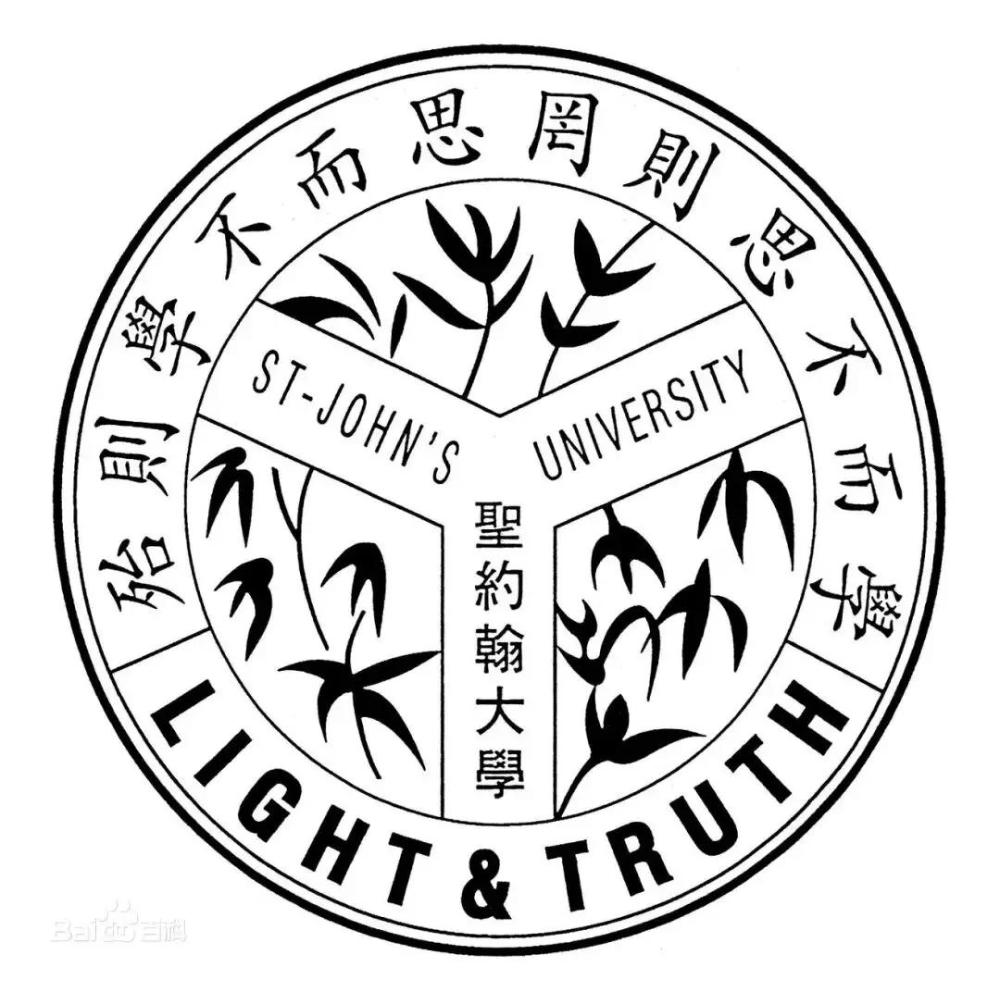
重要人物：
创始人施约瑟：19世纪美国圣公会派驻中国的一位主教，翻译了北京官话旧约圣经和文理本新旧约圣经。
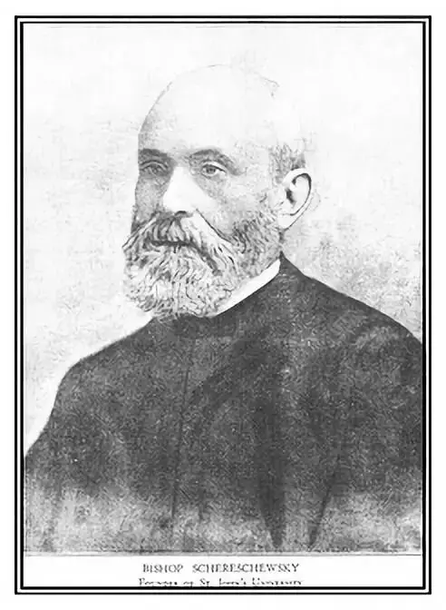
1831年5月21日，施约瑟出生在俄罗斯帝国统治下一个立陶宛小镇，父母都是犹太人。
1852年进入普鲁士布雷斯劳大学，在那里接触了一批信仰基督教的犹太人，之后信仰基督教。
施约瑟颇有语言天赋，在上海三年期间（1859年——1862年），他学会了上海话、官话（国语）和文言文。
1864年他和另外几位传教士（艾约瑟、包约翰、白汉理、丁韪良）组成了北京翻译委员会，着手将圣经翻译成北京官话。由于他精通希伯来文，因此主要负责旧约部分。
1875年，施约瑟计划在中国创办一所学院，因此他回到美国，进行募捐活动。
施约瑟回到上海以后，将原来的两所圣公会学校培雅书院和度恩书院合并，着手筹建圣约翰书院。
1878年，英国圣经公会将旧约和新约合并出版，即是北京官话新旧约全书。这部新旧约全书是第一部北京官话圣经，比后来的官话和合本早四十年。
之后的十几年里，施约瑟在中国积劳成疾，1886年，他回到美国修养，居住了9年。
在此期间，施约瑟又将新旧约圣经翻译为文言文，即施约瑟文理译本。
翻译时，施约瑟因中风，只有两个指头能活动，所以他用这两指翻译的圣经又称文理二指版圣经。
1906年10月15日，施约瑟因糖尿病而离世，享年75岁。
最长的校长卜舫济：
美国圣公会传教士、教育家，担任上海圣约翰大学校长52年之久。
卜舫济出生于美国纽约的一个圣公会教徒家庭，祖父为圣公会牧师，父亲卜雅各是纽约的圣经出版商和圣公会纽约教区司库。
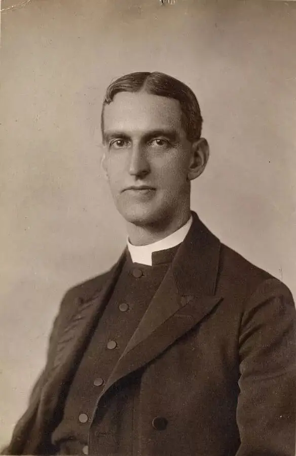
1883年，卜舫济从哥伦比亚大学毕业，随后进入圣公会总神学院学习神学，在那里，他由于为一位中国洗衣工教英语，而对到中国传教发生兴趣。
1886年，卜舫济从神学院毕业，立刻接受美国圣公会的差遣前往中国传教，11月18日抵达上海。他住到嘉定的一户农家，以尽快掌握中国的语言习俗。
1887年，他被派到美国圣公会在华创办的第一所大学——圣约翰书院任英语教习，1888年6月，年仅24岁的卜舫济被提拔担任圣约翰书院校长。
在他领导下，圣约翰特别注重英语教学，规定所有科目（除中文）一律采用英语教学，校园内一律采用英语进行交流。体育是圣约翰的另一个特色，运动水平居各校领先地位。
1947年，卜舫济去世于上海，葬于上海静安公墓。
重要开拓者颜永京：
祖籍山东省，出生于上海市。中国基督教圣公会早期的华人牧师之一，武昌文华书院（华中师范大学前身）和上海圣约翰书院的开创者之一。
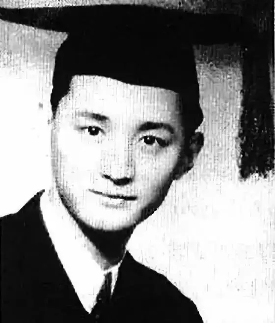
1878年，颜永京协助施约瑟主教创办圣约翰书院，1881年任校长，他积极推动出国的留美幼童归国来校任教。
后来圣约翰大学为纪念颜永京的功绩，将男生宿舍楼命名为“思颜堂”（用庚子赔款所建）。
颜永京教会教育界公认的华人领袖，最早进入教会教育高层的中国人，被视为第一个把西方心理学介绍到中国之人。
因此，和颜永京有着种种联系的华中师范大学和华东师范大学心理学一直很强。
-02-金陵女子大学
历程：
1913年，美国教会美北长老会、美以美会、监理会、美北浸礼会和基督会决定在长江流域联合创办一所女子大学。
11月13日，组成校董会，选定南京为校址所在地。
1915年，金陵女子大学在南京东南绣花巷李鸿章花园旧址开学，首任校长德本康夫人（Mrs Laurence Thurston）。
1919年，首届5位学生毕业，学位以金陵大学名义授予，这是第一届在中国高等学校中获得学士学位的女大学生。
金陵女子大学也是中国第一所女子大学，这在当时的中国是难以想象的。
1923年7月移至随园永久校址，这是一个漂亮的中国古典宫殿式建筑群，聘请美国建筑师亨利·墨菲设计。
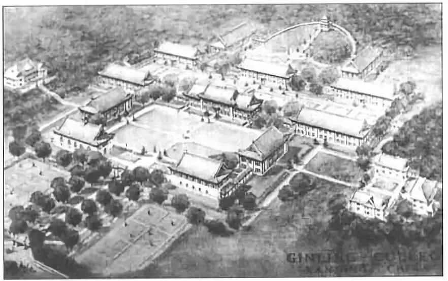
亨利·墨菲，又译茂飞，美国建筑设计师，他曾在20世纪上半叶在中国设计了雅礼大学、清华大学、福建协和大学、金陵女子大学和燕京大学等多所重要大学的校园，并主持了国民政府南京的“首都计划”，是当时中国建筑古典复兴思潮的代表性人物。
1927年后，校务由美国人转交中国人。1928年，徐亦蓁被推选为董事会长，吴贻芳担任校长，1930年在国民政府教育部立案，更名金陵女子文理学院。
金女大办学中设置过16个四年级学科，包括中文、英语、历史、社会、音乐、体育、化学、生物、家政以及医学专科等，在国内外享有声誉。
从1919年到1951年，毕业人数为999人，人称999朵玫瑰。
1937年，抗战爆发，金陵女子文理学院迁至四川成都城南的华西坝，和几所教会大学一起，借用华西协和大学的校园。
直到1946年才返回南京，留校的魏特琳，利用校园，保护了大批中国妇女免遭日军暴行。
国民政府迁台后，在香港金陵女子大学作为13所国民政府迁台前存在的基督教教会大学之一，被并入香港崇基学院，后者于1963年，加入成为香港中文大学。
1952年金陵大学被撤销，原金陵女子文理学院和国立中央大学1949年改名而来的南京大学的师范学院合组为南京师范学院（1984年改名南京师范大学），校址设在原金陵女子大学的校园内。
在南师最初的150名教职工中，原金女大教职工占了三分之一。
1980年代，吴贻芳推动金陵女子学院复校；1987年3月，依托南京师范大学正式成立金陵女子学院。
校友：
徐亦蓁博士
徐亦蓁，1919年文科毕业，曾在北京女高师任教，留美获教育硕士回国后，多年主管盲童学校、教会免费学校及孤儿院的教育工作。1928年至1938年任金女大校董会主席，其后又赴美攻读管理及学生辅导博士，是美国女生训导长协会第一位中国女会员。吴校长出席联合国制宪大会期间任顾问，1946年任联合国妇女地位委员会中国代表，金女大旅美校友会第一任会长。
严彩韵教授
严彩韵，1921年理科毕业，赴美国深造时以“全优”的成绩为初创的金女大争得了荣誉，获化学硕士，并成为著名营养学家。业绩被列入《美国科学界杰出人士》、《美国科学领袖》及《（英国）皇家蓝皮书》。为我院设立“严彩韵纪念基金”。
严莲韵女士
严莲韵，1924年化学系毕业，曾任上海校友会会长、名誉会长，国内“吴贻芳基金会”发起人、会长，带领众多亲友对金女院的发展作贡献。长期在上海女青年会、工商联、政协及妇联任职，是上海知名的社会活动家。
邓裕志女士
邓裕志, 1926年文科毕业，英国社会服务学硕士，著名社会活动家。早年创办上海妇女救国会，女工夜校。曾连任三届全国人大代表、六届全国政协委员、五届全国妇联常委及中国基督教女青年全国协会总干事，中国基督教三自爱国运动委员会副主席，中国基督教协会顾问，将个人一生积蓄捐作“厚生奖助学金”。
刘恩兰博士
刘恩兰，1926年理科毕业，留美获自然地理硕士学位回母校创办地理系；后获英牛津大学博士学位再次回地理系执教，是我国地理学会与气象学会的创始人，著名的地理学家。1954年调往国防系统从事海洋开发、海军建设研究工作，任国家海洋局顾问，是中国第一位女海洋学专家。
鲁桂珍博士
鲁桂珍，1926年理科毕业，曾在母校任教，后获英国剑桥大学营养学博士，为英国著名科学家李约瑟的夫人，协助其丈夫研究和撰写科学巨著《中国科技思想史》，共七卷30多分册，并且是两个分册的主要负责人。
王明贞博士
王明贞，1926----1928年就读于理科，毕业于北平燕京大学物理系，获硕士学位，曾在金女大任教。后赴美获博士学位，1955年回国，任清华大学教授。2005年，清华大学物理系为她出版“王明贞先生百岁寿辰文集”。
吴懋仪博士
吴懋仪，1928年化学系毕业。获燕京大学硕士学位及美国麻省剑桥越第夫学院化学博士学位，后任美国哈佛大学研究员。1944年回金女大任化学系主任。是我国著名的有机化学专家，1956年当选为“全国三八红旗手”。
校训：
“厚生”
创始人德本康夫人阐释：
理念取材于圣经约翰福音第十章中耶稣所说的话："我来了，是要叫人得生命，并且得的更丰盛"；"我来了，不是要受人的服侍，乃是要服侍人"，这即是"施比受更为有福"的精神。
“厚生”就是在各方面得到至善至美的发展，在多项发展中，学生人格的塑造，基督生命的培育至为重要。
获取丰盛生命的学生才懂得为人类社会多做贡献"。
学校以"厚生"为目标教导学生，并在学校生活的多方面通过潜移默化的方式引导学生朝此方向努力，校训"厚生"是"金女大"人精神的源泉。
吴贻芳阐释：人生的目的不光是为了自己活著，而是要用自己的智慧和能力来帮助他人和社会，这样不但有益于别人，自己的生命也因之而更加丰满。
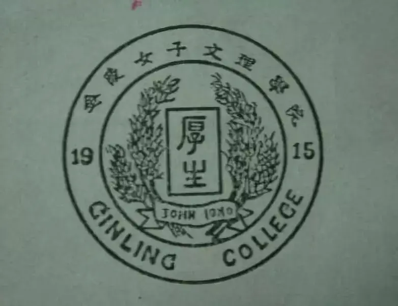
重要人物：
首任校长德本康夫人：
1875年5月16日生于美国康涅狄克州的哈特福德郡，她本名马提拉·柯，父亲是早年移民美国的苏格兰人，是虔诚的清教徒。
母亲具有苏格兰--爱尔兰血统，受家庭影响，德本康夫人13岁便受洗入教，童年时喜欢玩开办学校的游戏，渴望做一个小学教员。
长大后，德本康夫人嫁给了耶鲁大学的学生劳伦斯·德本康，他当时是学生立志海外宣教运动的成员，雅礼差会主要创始人之一。
1903年暑期，德本康罹患肺结核，不得不回到美国就医，次年在加利福尼亚州去世。
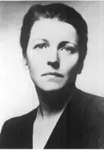
德本康夫人为减少丧夫之痛便更加努力工作，1904-1906年，她担任学生立志海外宣教运动的秘书；1906-1911年，她又被派到中国湖南长沙的湘雅医学院教书，并协助医务工作。
1913年9月20日，德本康夫人到达南京后，一边学习中文，一边在长老会的明德女中上课，同时参加金陵女子大学的筹划工作，之后成为首任校长。
自1913年筹建金陵女子大学时起，德本康夫人主持校务15年。
在12年的校长生涯中，她为学校创建、筹募经费（南北美浸礼会、基督会、南北美以美会、监理会，以及北美长老会某董事部分别捐助一万美元为建校用，还承诺每年提供不少于600美元为常年的一半开支经费）和规划完工耗费了许多精力。
在建立教学秩序和扩大规模等方面也倾注了大量心血，同时还要给学生上课。她教过圣经课、天文课、大学代数、三角、几何等课程；还负责学校人事、财务与文书报表等工作，甚至指挥合唱团，所以她被戏称为"Jack of all trades"（三脚猫）。
1928年11月，德本康夫人主动辞去校长职务，她在辞职演说中指出："我们的目标是建立一所活跃着基督教精神，以基督教进行管理的女子大学。大学应该保持高水平的教育，提高社会效率，促进精神发展与最高人格"。
1943年，德本康夫人乘 Gripsholm 号轮船回国，住在马萨诸塞州的 Auburndale, 直到1958年去世。
吴贻芳：
中国教育家、社会活动家，基督徒。
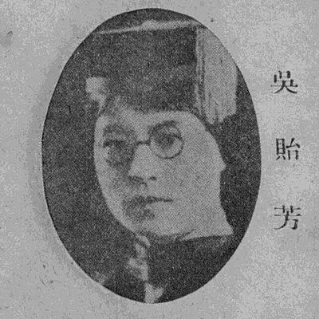
吴贻芳祖籍江苏泰兴，出生于湖北武昌，1916年考入金陵女子大学，同年在上海浸会怀恩堂受洗。
她是金陵女大首届毕业生。毕业后任教于北京女子高等师范学校，1921年出国留学，1928年获美国密歇根大学生物学博士学位。
毕业后回国，任金陵女子大学（1930年更名金陵女子文理学院）校长，成为中国高等教育史上的第一位大学女校长，将金女大掌管得有声有色，蜚声海外。
中华人民共和国时期，吴贻芳历任南京师范大学名誉校长，江苏省教育厅厅长、江苏省人民政府副省长、江苏省政协副主席，中国基督教三自爱国运动委员会副主席（1954年）、第三届名誉主席，全国妇联副主席。
1979年获密歇根大学为世界杰出女性专设的“智慧女神”奖。 她是中国第一届女大学生、第一位大学女校长、第一个女副省长，也是世界上第一位在《联合国宪章》上签字的女性。
1985年11月10日，吴贻芳在南京去世。
-03-齐鲁大学
历程：
1864年9月，美国长老会宣教士狄考文（Calvin Wilson Mateer，1836年-1908年）和夫人狄邦就烈（Julia Mateer）创办登州学堂，1882年改为登州文会馆（Tengchow College），为中国境内第一所现代高等教育机构。
差不多同时期，英国浸礼会创办青州广德医院、青州医学堂和葛罗培真书院。
1902年在英国浸礼会和美国长老会的联席会议上，决定组建“山东新教大学”，将青州培真书院、登州文会馆、青州广德书院3所高校合并为规模较大的两所学院，并拟成立一所医学院。
1909年，山东新教大学更名为山东基督教大学，中文名称为山东基督教共和大学。
民国成立以后，于1915年，经校务委员会批准，以“齐鲁大学”作为非正式用法的校名，意为“齐鲁地区的大学”。
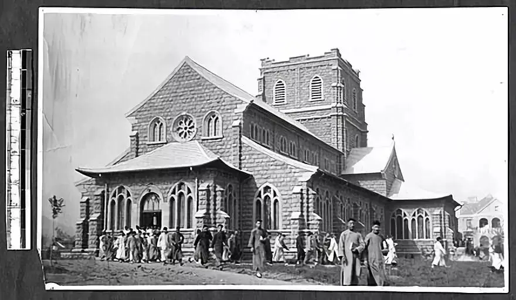
1929年，国民政府颁布大学组织法与大学规程，要求所有民办大学立案纳入管辖，并由中国人担任校长。
1930年7月，该校再次向南京国民政府申请立案，12月立案被核准，标志着该校被纳入中国教育系统。
这一立案进程推进了其本地化、世俗化的进程，在教学宗旨方面，校方参照中国政府的教育体制作相应调整，将宗教课程和活动作灵活改动，重视和充实了世俗化课程。
在师资力量方面逐步增加了中国教职员的比重，在教学目标方面开始逐渐关注中国社会，例如参与到山东当地的农村建设，在行政管理方面教会系统不再主导该校的发展方向，领导和管理权逐步发生转移。
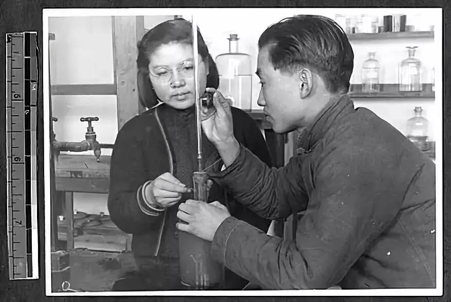
20世纪30年代是齐鲁大学的全盛时期，老舍、钱穆、顾颉刚、栾调甫、马彦祥、吴金鼎、胡厚宣等一些学术名家先后在此执教。
学校医科的实力最强，有“南湘雅、北齐鲁”之称。
当时的齐鲁大学号称“华北第一学府”，和燕京大学并称“南齐北燕”。
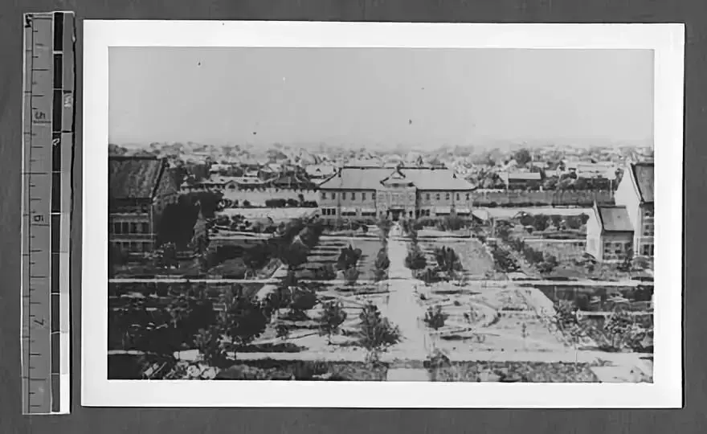
1938年至1945年抗日战争期间，因济南沦陷，齐鲁大学被迫迁往位于四川成都华西坝的华西协合大学校址，与华西协合大学，中央大学医学院，金陵大学，金陵女子文理学院及燕京大学联合办学，直到1945年10月回迁复课。
期间，南京金陵大学医科、汉口大同医学堂的部分师生并入齐鲁大学的医科附设医院，组建为齐鲁大学医科。
齐鲁医院曾与北京协和医院、上海同济医院、成都华西医院一并称为1949年以前的中国四大教会医院。
抗日战争胜利后，齐鲁医院重新恢复为齐鲁大学医学院附属医院，后曾一度改名为山东省立二院（现山东省立医院当时称为山东省立一院，济南本地老人口中的“二院”往往指的是齐鲁医院而非山东大学第二医院），现为山东大学齐鲁医院。
1952年9月，齐鲁大学被解体撤销，其原有各个学院分别并入专业相同的专门学院——神学院和国学研究所撤销，理学院中的生物、物理、化学三系并入山东师范学院(今为山东师范大学)。
药学系并入南京药学院（今为中国药科大学）；文学院中的天算系并入南京大学，天文台也并入南京紫金山，经济系与山东会计专科学校组建山东财经学院（1953年冬大部并入上海财经学院，1958年重建，后改名山东经济学院，今山东财经大学）。
文学院其他专业并入当时在青岛的山东大学；农业专科划归济南山东农学院（今山东农业大学）；医学院与原来的山东医学院、华东白求恩医学院组建新的山东医学院（即后来的山东医科大学，2000年与山东工业大学同时并入山东大学，今为山东大学齐鲁医学部）。
校友：
齐鲁大学培养了诸多医学人才，比如，世界医学方面的经典之作《cececilmedicine》中，有三位作者是齐鲁医院的教授，司美礼、杜儒德、王国栋。
还有王会文、侯宝璋、薛愚、张汇泉、尤家骏、叶鹿鸣、冯兰洲、高学勤、叶衍庆、赵常林、张子圣、兰锡纯、孙鸿泉、王永贵、于道泉、吴金鼎、张维华、杨懋春、王锡恩、苗永端等著名学者、专家
校训：
尔将识真理，真理必释尔
校训灵感来自于《约翰福音》8章32节：你们必晓得真理，真理必叫你们得以自由。
旨在培养具有基督教追求真理和奉献的杰出人才。
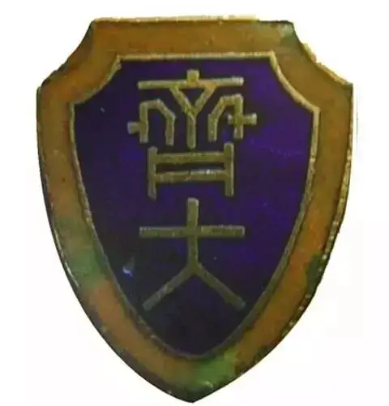
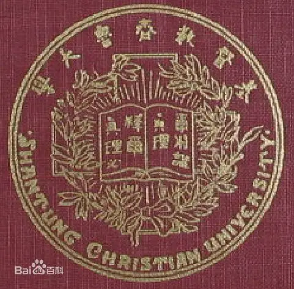
重要人物：
狄考文：美国人，美北长老会来华传教士。
狄考文出生于宾夕法尼亚州坎伯兰县的一个苏格兰-爱尔兰裔家庭。
1857年毕业于加农斯堡，后进入西方神学院学习，期间曾在俄亥俄州特拉华的长老会服务两年。
1862年12月与来自俄亥俄州特拉华的邦就烈（Julia A. Brown）结婚。同年获得神学博士学位，并被按立为牧师。
1863年7月3日，狄考文夫妇自纽约与郭显德一同乘船赴中国传教，同年抵达上海，次年1月15日乘船至山东登州（今蓬莱），接替传教士倪维思的工作。
1864年在登州开设“蒙塾”，1876年扩建为登州文会馆。
狄考文在校内开设小型博物馆，并亲自编写课本，至1895年已编写《笔算数学》、《代数备旨》、《电学全书》等28本教科书，亦曾为外国传教士编写汉语教材《官话类编》。
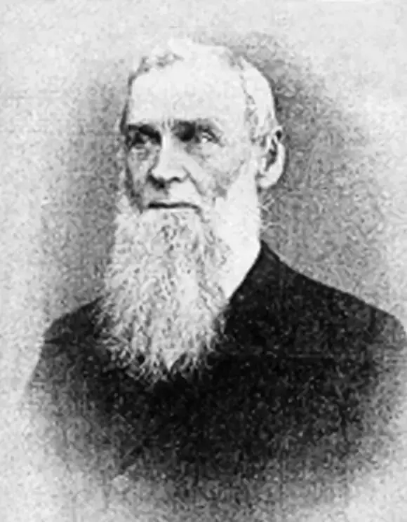
其夫人邦就烈在文会馆引入西方音乐教学，文会馆后来与其他教会学校合并为齐鲁大学。
1890年，狄考文当选官话和合本圣经翻译委员会主席，在王宣忱（原名王元德，毕业于文会馆）的协助下参与圣经翻译。
1906年，和合本新约全书翻译完成，并于次年出版，成为中国人最喜欢的圣经版本。
1908年，狄考文赴烟台参加译经研讨会期间感染痢疾，于9月28日在青岛福柏医院逝世。葬于烟台毓璜顶美国长老会墓地。
-04- 东吴大学
历程：
1895年，中国在甲午战争中惨败，激发了年轻人学习西方知识的热情。
1896年，苏州监理会宫巷教堂牧师孙乐文为回应一群年轻的中国学者学习英语的要求，在苏州开办了宫巷中西书院，第一批学生有25人，到1898年11月，学生已超过100人。
1899年，监理会决定在苏州开办一所大学，1900年12月该校董事会在上海组成，孙乐文被选举为新大学的首任校长，新大学取名为“东吴大学堂”，当时成立文理，医和神学三科，辛亥革命后改称东吴大学。
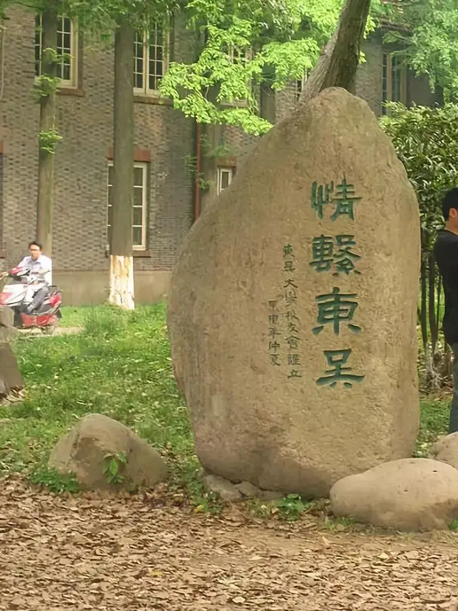
1901年3月，宫巷中西书院迁入天赐庄博习书院旧址，东吴大学堂正式开学，成为美国基督教在中国建立的早期教会大学之一。
开办之初，只设中学班，学生不足百人。到1905年开始招收12名大学生。该校西学课程大体仿效美国大学，国学则自作安排，分设有文理，医和神学三科和附中数所（分别位于苏州、上海和湖州）。
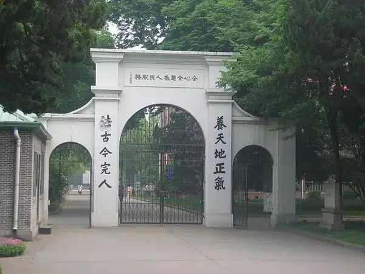
1904年东吴大学增设医科。
1907年东吴大学首次授予毕业生学士学位（中国第一个文学士学位——沈伯甫）。
1911年3月，孙乐文去世，校董会选举同一宗派的上海中西书院的校长葛赉恩为东吴大学的新校长。
1917年东吴大学颁授中国第一个硕士学位（徐景韩）。
1927年文理科、法科分别更名为文理学院及法律学院。
1928年东吴大学开始招收女生，颁授第一个法学硕士学位（金兰孙）。
1937年抗日战争爆发，师生大部分进入上海租界，与圣约翰大学、沪江大学、之江大学同赁慈淑大学上课。
1952年东吴大学被撤销。
原东吴大学（Soochow University）与苏南文化教育学院、江南大学数理系合并为苏南师范学院，同年定名为江苏师范学院，在原东吴大学校址办学，最终发展成为了现在的苏州大学。
东吴大学在上海的法学院于院系调整中撤销，法律系师生转入华东政法学院，会计系并往上海财经学院。
校友：
查良镛（金庸） - （1924 - ）武侠小说作家、香港新闻、文艺界创办人及评论家。（上海东吴法学院）
蒋纬国 - （1916 - 1997）上将、历任三军大学校长、联勤总司令、国家安全会议秘书长、战争学院创办人、总统府资政。
程金冠 - （1912 - 2005）著名短跑运动员，曾代表中国参加1936年柏林奥运会。
倪征𣋉 - （1906 - 2003）远东国际军事法庭中国检察官、上海东吴大学教授兼法律系主任、东吴大学校长、国际法院法官、国际法研究院院士。
李浩培 - （1906－1997）中国当代国际法学家。国际法研究院院士。
谢东闵 - （1908 - 2001）前中华民国副总统、实践大学创办人。
谈家桢 - （1909 - 2008）著名遗传学家，“中国遗传学泰斗”。国际编号3542号小行星以其名字命名。
杨铁梁 - （1929 - ）前 香港最高法院首席大法官、香港红十字会主席、中文大学法律学院执行委员会主席，前香港大学校董会主席、首席按察司、行政会议非官守成员、外汇基金主席。
周宏涛 - （1916 - 2004）前行政院主计处主计长、财政部次长、国民党副秘书长。
赵朴初 - （1907 - 2000）中国社会运动家、宗教领袖、诗人、书法家、中国佛教协会会长、第六至八届全国政协副主席。
端木恺 - （1903 - 1987）安徽大学法学院院长、行政院参事、行政院会计长、国策顾问、在台复校最力校友，有“再创办人”之称。
高文彬 - （1920 - ）远东国际军事法庭检察官向哲浚的英语翻译、秘书，找出百人斩杀人竞赛的证据。
校训：
英文 Unto a Full-grown Man
中文：养天地正气，法古今完人
Unto a full grown-man"，语出《圣经‧以弗所书》第四章十三节（Ephesians 4:13）原文节录如下："And he gave some as apostles , some as prophets, some as shepherds and teachers,……ntil we all attain to……to a full-grown man, ……"
翻译过来是这样的：直 等 到 我 们 众 人 在 真 道 上 同 归 于 一 ， 认 识 神 的 儿 子 ， 得 以 长 大 成 人 ， 满 有 基 督 长 成 的 身 量 。
意旨是要校众在信仰中成长为合一的基督徒，满有基督的力量。
至于中文部分，则是民国十六年，东吴向政府申请立案时，为求与unto a full grown-man精神相符合，而选取国父之题词「养天地正气，法古今完人」的。
人可以由小人、凡人变易为大人、圣人，由此来说，unto a full grown-man一校训已明确的涵蕴人文的要素，因为非借此无以成为一完人、一full grown-man故也！
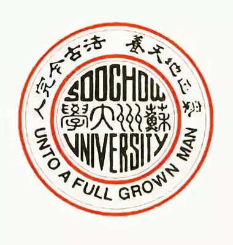
重要人物：
孙乐文（David L. Anderson，1850年2月－1911年）是一位美国监理会派往中国的传教士，东吴大学首任校长（1901年-1911年）。
1850年2月，孙乐文出生于美国乔治亚州夏山镇的一个商人家庭，毕业于弗吉尼亚州的华李大学。
1882年，孙乐文被美国监理会派往中国，与柏乐文、蓝华德等人从美国同船来到中国。他先在嘉定县南翔镇传教，2年后调往苏州。
1891年，监理会在苏州城中心的宫巷建造礼拜堂乐群社会堂，孙乐文任该堂牧师。
1895年冬，一群年轻的中国学者受到中国在甲午战争中惨败的刺激，来到乐群社会堂，热切地要求学习英语和西方知识，于是孙乐文兴办了宫巷中西书院（Kung Hang School），首批学生有25人，到1898年，学生已达到109人。
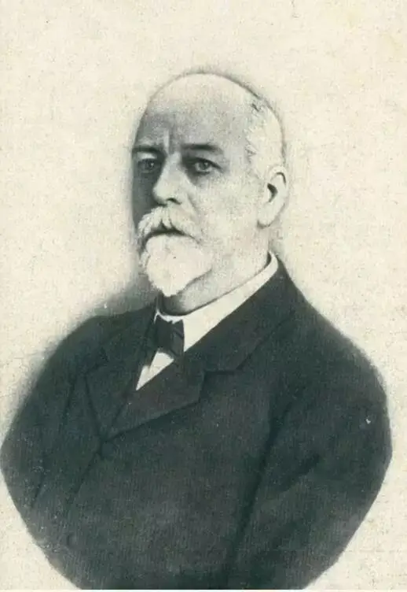
并且一改以往教会学校只能招到贫苦儿童的局面，许多富裕家庭的子弟纷纷入学，学生的起点也大为提高。
1899年，监理会又策划在苏州创办一所大学。1900年春，孙乐文回美国筹备。
不久，中国发生义和团事件，宫巷书院因而停办。年底，孙乐文返回苏州 ，他以宫巷书院为基础，在天赐庄博习书院旧址，于1901年3月，创建了东吴大学，并出任首任校长。
1911年，孙乐文在上海逝世，今苏州大学内有为纪念他而命名的建筑的孙堂。
-05- 燕京大学
历程：
燕京大学建立于1919年，其前身是美国教会在北京一带办的三所教会学校：汇文大学、华北协和女子大学、通州协和大学。
除了美以美会和公理会外，美国美北长老会和英国伦敦会也参与燕京大学的创建。
1920年，汇文大学、华北协和女子大学和通州协和大学合并，在南京金陵神学院任教的司徒雷登被任命为新成立的燕京大学的校长。
1921年，校长司徒雷登获得美国著名出版商亨利·卢斯及美铝公司创办人查尔斯·马丁·霍尔的捐款，在北京西郊购买了数处前清亲王赐园，聘请建筑设计师亨利·墨菲进行总体规划，建造了近代中国规模最大、质量最高、环境最优美的一所校园。
1926年，正式迁址。全校共辖有神学院、法学院、医学院（又称医预院，学制为三年预科），以及文科和理科相关专业学系。
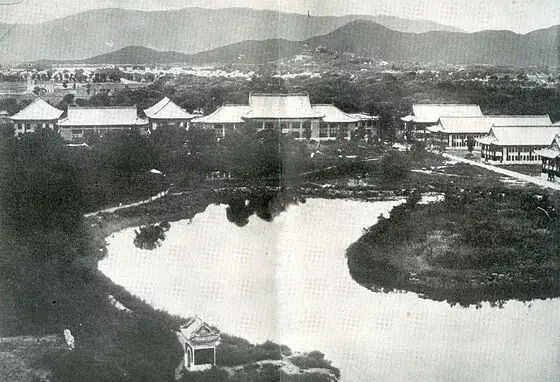
1929年，燕京大学和哈佛大学开展国际学术合作，成立哈佛燕京学社，提高了燕大学术地位，也扩充燕大的经济来源。
1937年抗日战争爆发，司徒雷登犹豫再三，是否要将燕京迁往后方。
但是经过一番深思熟虑，他决定让这所大学留在北京。
他迅速在燕园升起美国的星条旗，以表示此处属于美国财产，又特别在大门上贴上公告，不准日军进入。
日本人对燕京大学并非没有觊觎之心，他们一直寻找种种借口要求燕京大学聘请日籍教师和接受日本学生，对此司徒雷登只是阳奉阴违。
为了堵住日本人的口舌，他聘请了一位日籍教师——考古大师鸟居龙藏，那是一个反对日本侵华的纯正学者。
司徒雷登也曾经答应招收日本学生，但是要求他们必须经过燕京大学的入学考试。
不过，在北京沦陷时期，从来没有一个日本学生能够在燕京大学的入学考试中获得及格而被允许进入燕京大学。
1941年12月太平洋战争爆发，司徒雷登成为日本人的阶下囚，为燕大蹲了4年监狱。
1952年，燕京大学被拆分，学校民族学系、社会学系、语文系（民族语文系）、历史系并入中央民族学院（今中央民族大学）。
法学院并入北京政法学院（今中国政法大学），经济学系并入中央财经学院（今中央财经大学）。
其他文科、理科多并入北京大学、工学院并入清华大学，燕京大学校址“燕园”校舍由北京大学接收。
校友：
燕京大学存在了33年，注册学生不到一万人，后来成为著名学者和学科带头人的，就超过100人，其中包括中国科学院院士42人，中国工程院院士11人。
教授：埃德加·斯诺、夏仁德；教育家林迈可、陆志韦；社会学家雷洁琼、许仕廉；人类学家吴文藻；考古学家容庚；神学家赵紫宸；法学家张友渔、江平；哲学家冯友兰、张东荪、洪谦；
史学家钱穆、顾颉刚、邓之诚、韩儒林；文物鉴定家王世襄；地下医务员刘耘诚；政治学家萧公权；文学系周作人、郑振铎、冰心、冯沅君、林庚、顾随、陆侃如; 西方语言文学系吴宓、吴兴华等。
校训：
因真理，得自由，以服务
取自圣经《约翰福音》耶稣的两句话：人子来，并不是要受人的服侍，乃是要服侍人；你们必晓得真理，真理必叫你们得以自由。
因为认识信仰，认识真理，而得到自由，但是这并不是重点，而是要带着这样信仰的力量去服务邻舍和国家。
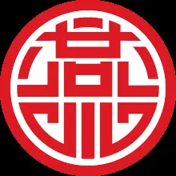
重要人物：
司徒雷登：
出生于中国杭州，逝世于美国华盛顿，美国传教士，燕京大学创始人，中华民国迁往台湾前最后一任美国驻华大使。
司徒雷登的父母都是早期到中国的美南长老会传教士，从血统上说，他是一位纯粹的美国人。
但用司徒雷登自己的话来说，自己“是一个中国人更多于是一个美国人”，他会讲一口纯正的杭州话。
11岁时到美国弗吉尼亚州上学，在那里曾被人讥笑为不会说英语的怪物，当他在弗吉尼亚州的汉普登-悉尼学院求学期间，受到“学生志愿国外传教运动”的影响，而立志于传教，转入纽约协和神学院。
1904年，他结婚后携妻子艾琳·罗德（Aline Rodd）回到杭州，成了第二代美南长老会传教士。
1908年，司徒雷登应邀前往南京，出任金陵神学院希腊文教授。1910年，任南京教会事业委员会主席。辛亥革命时，兼任美联社驻南京特约记者。
1919年1月，司徒雷登被聘请为首任燕京大学校长，司徒雷登四处募捐，张学良将军曾为此大学捐款。
司徒雷登提倡学术自由，注意与学生、员工互动交流，对学生和蔼可亲，对教职员热情温暖，给许多学生和员工留下深刻印象。
司徒雷登同情学生运动，九一八事变后，他甚至亲自带领学生上街游行，高呼抗日口号。
1930年，美国普林斯顿大学授予他荣誉文学博士学位。1933年，受美国总统罗斯福召见，听取他对中国时局的意见。
1941年太平洋战争爆发，他被日军关押在北京，直到1945年8月获释，继任燕大校长（后为校务长）到离开中国。
1946年7月11日，司徒雷登出任美国驻华大使，任期恰好是整个国共内战时期（1946年－1949年），同时仍担任燕大校务长之职。
1949年被迫回到美国，美国国务院指示司徒雷登大使，经过最高层级考虑，不论在任何情况下不能过访北平。
8月8日，毛泽东写了一篇文章《别了，司徒雷登》，文中借他对国民党和美国当局极尽讽刺。
1952年11月28日，他正式辞去大使。
他回到美国后被麦卡锡主义者骚扰，1949年12月患了脑血栓，导致半身不遂和失语症，由其学生兼私人秘书的傅泾波和家人照顾其起居。
1962年9月19日在华盛顿病故。他一直希望能够将骨灰送到中国，埋在燕京大学校园内，并就此立下遗嘱。
逝世后，傅泾波1973年和1984年两次访问北京，均向有关当局提出将司徒雷登骨灰回葬燕园之事。
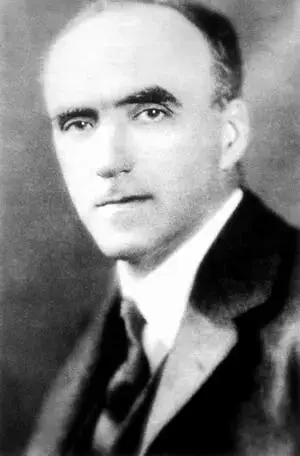
傅泾波在1986年还为此事请中国驻美大使递信给邓小平。1986年6月，经中共中央书记处批准，北大校务委员会主任王学珍去信同意司徒雷登骨灰以原燕京大学校长名义安葬于临湖轩。
“不料，一群‘马列主义老太太’联名反对，事情不得不搁置。”燕大校友王百强回忆，有人联名上书反对安葬。
2008年11月18日，司徒雷登的骨灰正式移葬杭州半山安贤园，他一手创建和深爱着的燕大竟然容不下自己的骨灰。
-06- 之江大学
历程：
之江大学起源于1845年美北长老会麦嘉谛牧师在宁波创办的“崇信义塾”
该校于1867年迁往杭州，改名为“育英义塾”，1897年，开设大学课程，并改名“育英书院”。
1914年，改名为“之江大学”。北伐战争期间，一度停办。
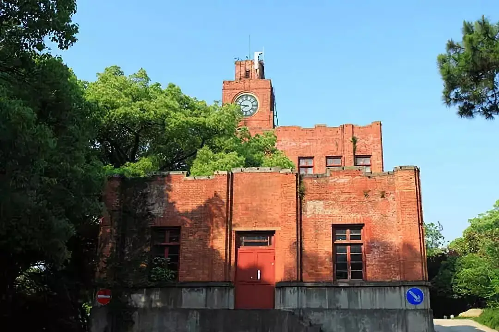
1931年，向中华民国政府申请立案，因为只有文理两个学院，定名“私立之江文理学院”。
抗日战争期间曾经迁至安徽屯溪、上海、福建邵武、贵阳、重庆等地。
1949年后后，校董会改在香港成立崇基学院，后并入香港中文大学。
1951年，之江大学被浙江省政府文教厅接管，美籍教员离校回国。
1952年被解散，该校文理学院大部分系与浙江大学师范学院（后更名为浙江师范专科学校）、浙江大学文学院部分系、浙江大学理学院部分系、浙江俄文专科学校共同组建组建浙江师范学院（后改名为杭州大学，杭州大学于1998年并入浙江大学；注：此处浙江师范学院不同于今天意义的杭州师范大学和浙江师范大学）；
文理学院有部分系并入复旦大学；财经学院并入华东财经学院；工学院除航空工程系并入中央航空学院以外，全部并入浙江大学；之江大学宣告结束。
校友：
潘希珍（1917年－2006年），笔名琦君，散文家，擅写怀旧抒情散文。
陈从周（1918年－），建筑学家
杨嗣信（1930年－），建筑师
朱生豪（1912年－1944年），翻译家，尤以翻译莎士比亚作品著称。
林作砥，1943届土木系。污染防治专家，美国国家工程院院士。
重要人物：
麦嘉缔，字培端，是一名美国医疗传教士，美北长老会最早派往中国的传教士之一，医学博士。
1844年6月，抵达宁波，在佑圣观内施医传教，他翻译了第一本宁波方言的《路加福音》，又一度担任美国驻宁波的首任领事（代理）、邮政局主政，以及清廷出使日本钦使的顾问。
1845年，麦嘉缔在宁波创办崇信义塾，该校于1867年迁往杭州，改名为育英义塾，即之江大学的前身。
1850年到1853年，麦嘉缔陆续编著了《平安通书》4册，由长老会的花华圣经书房出版，介绍天文、气象常识。他对中国博物学也颇有研究，在亚洲文会的刊物上发表不少论文，其中有33篇系用中文撰写。
1872年，麦嘉缔前往日本，担任东京帝国大学法律兼博物学教授，随行的中国籍义女金雅妹便在日本上学。
1881年，金雅妹中学毕业后，麦嘉缔又把她送到美国留学，使她成了中国近代第一位女大学生、留学生。
-07- 华西协和大学
历程
1906年，西方传教士在四川建立了华西教育联盟，旨在让四川的所有中国人改信基督教。
1910年，美、英、加三国5个（一说4个）教会组织的差会创建了华西协和大学。
该校仿照牛津、剑桥模式，实行书院制，创立之初，华西协和大学仅有文、理、教育三科。
1914年，该校以先前成立的存仁、仁济医院为基础，设立医科。
次年，增设宗教科，1917年，林则在成都开设了中国首家牙科诊所，并在华西协和大学成立了牙医科，使华西协和大学成为了中国口腔医学的发轫地。
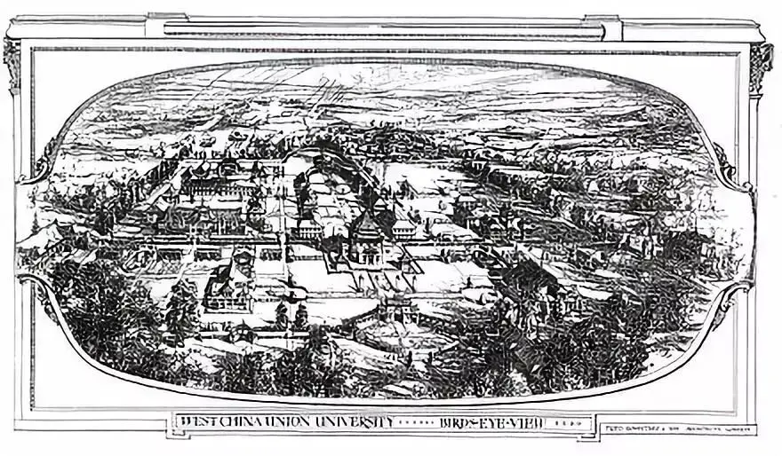
1924年，华西协和大学开始招收女性学生，1927年，学校开始向中国教育部门申请备案。
1933年，中华民国教育部同意了华西协和大学的备案要求，学校也随之改名为“私立华西协和大学”。
1930年代，华西协和大学的人类学家葛维汉对广汉三星堆进行了首次发掘。
抗日战争爆发后，该校与迁来成都的齐鲁大学、金陵大学、金陵女子文理学院、中央大学、燕京大学等校联合办学，为躲避日军对成都轰炸，该校一度迁往峨嵋山脚下。
1949年，任教于该校的外教纷纷归国。
1952年，该校被改名为“华西大学”，随后，华西大学除医药学以外的专业均被调离，但也有其他高校的医学学科并入该校。
1953年，仅剩下医学科的华西大学改名为“四川医学院”，1985年，四川医学院改名为“华西医科大学”，后者于2000年与四川大学合并，现为“四川大学华西医学中心”。
校训：
仁智忠勇，清慎勤和
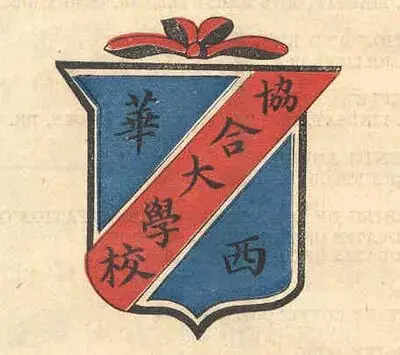
重要人物：
毕启（Joseph Beech，1867～1954），美国传道士、教育家，文学士，神学博士，华西协合大学（现四川大学华西医学中心）的主要创建人
1867年 出生于英国吉尔菲尔德市一个经营运输业的商人家庭，1873年 随父母迁居美国。
1899年 毕业于惠斯联大学，获神学博士学位，1899年 受基督教会差遣只身赴华。
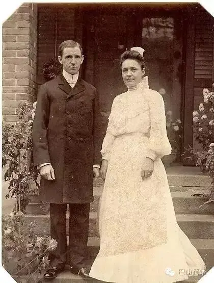
1903年 来到四川，先后创建了重庆求精中学，成都华美中学，1904年 创建成都华英中学，并任校长。
有资料表明，这所学堂的创办经费大多源于毕启的私人捐款，后来感到一人无力承担，四处八方筹措经费，得到了大学同学以及朋友的赞助。
毕启认为教育是让上帝福音、西方文明扎根下来最有效的方式。
1905年毕启 参与筹建华西协合大学，1913年 任华西协合大学首任校长。
1930年 毕启辞去华大校长职务，任华大教务长。
1946年 获民国政府授予外国人特殊功绩荣誉奖红蓝镶绶四等彩玉勋章，以79岁高龄返回美国，1954年逝世，享年87岁。
-08- 岭南大学
历程：
1885年，美国美北长老会海外差会接纳以牧师香便文为代表的长老会广州布道团的建议，同意于中国广东地区建立一所基督教书院。
1886年至1887年间，长老会牧师哈巴安德与6名友人于美国纽约成立“岭南基金会”。
格致书院（Christian College in China）于1888年3月28日开始授课，校址设于广州沙基金利埠（今六二三路）。
1903年5月更名岭南学堂，同年，钟荣光在广州河南康乐村购置200亩地，搭起板房作为临时校舍，开始招生上课。
后经其不懈努力，在此后数年为岭南学堂筹得120万元，兴建校舍，增添设备，同时开办大学预科，设附属小学和华侨学堂。
1912年9月，辛亥革命后，中文名称改为“岭南学校”，1916年开设文理科大学，1918年首届学士生毕业。
1924年7月3日至9日，中化教育改进社第三届年会在南京东南大学召开。会议着重讨论收回教育权问题，同时通过了收回教育权的三大提案。
岭南大学内部也出现学生运动，要求华人自办。
1926年4月，岭南大学董事会在纽约召开，钟荣光正在墨西哥募款，也赶赴纽约出席。
他在会议上发表谈话：“董事局创本校初意，原为扶助中国发展教育。待中国人得有办学之经验与能力，便将学校主权还诸中国人。现在时机，恰好成熟。”
岭南大学同学会也致函董事局，要求改组董事局，将学校归还华人自主，同年11月，国民政府颁布私立学校立案规程，规定大学必须由中国人办理，外人不得在中国设立大学。
此后校董事局派人来华协商，决定在华成立董事局。
1927年7月1日正名为岭南大学（Lingnan University），推举锺荣光为首任华人校长和校董会主席，李应林为首任常务副校长。
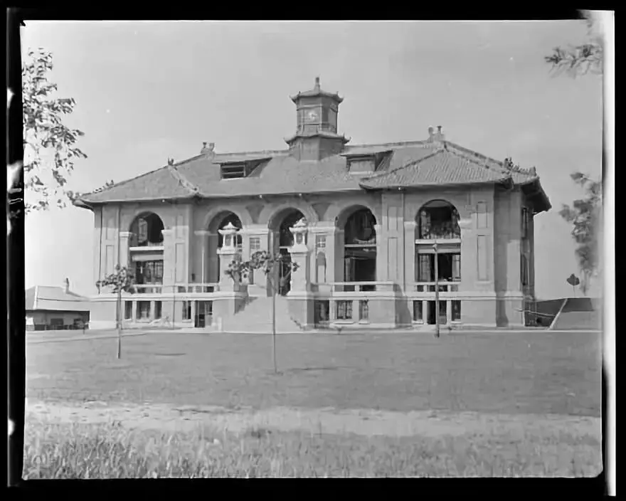
1941年底，太平洋战争爆发，香港沦陷，岭南大学因而停课。1942年于韶关仙人庙大村复课。
二次大战结束后，岭南大学迁回广州康乐校园，1945年10月31日复课。
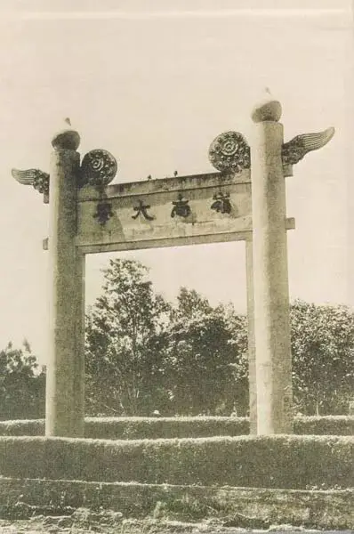
战后至国共内战期间，岭南大学在校长陈序经先生主持下一方面重整院系，另一方面吸纳因战乱南下的著名学者，如陈寅恪、王力、姜立夫、梁方仲等，促进岭南大学在学术研究方面的发展。
1952年岭南大学于年被并入中山大学。
1967年，“岭南教育扩展会”以“岭南书院”名义在香港复校，并在1999年复称岭南大学。
校友：
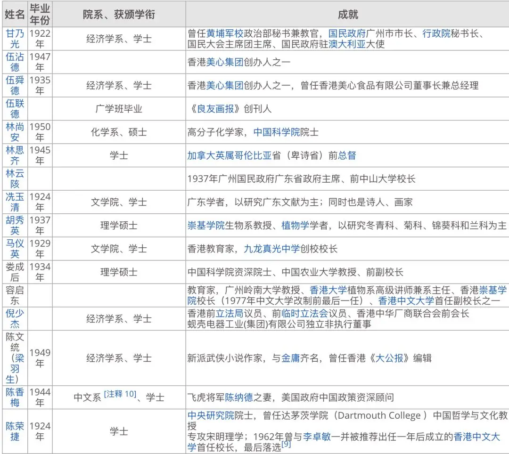
校训：
「弘基格致，服务社群」、「为神为国为岭南」，以「基督精神」为本，发展全人教育。
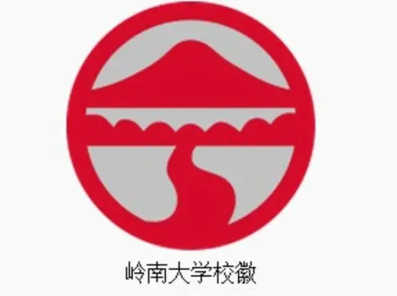
代表人物：
哈巴安德（Andrew Patton Happer，1818年－1894年），美北长老会最早派往中国的传教士之一。
1818年，哈巴安德出生于美国宾夕法尼亚州的一个长老会家庭。1844年，哈巴安德毕业于宾夕法尼亚大学，获医学博士学位，同年10月22日，受美北长老会差遣，抵达澳门，1845年开办了一所男子寄宿学校，招收了30名学生。
1847年3月，哈巴安德与花莲治（John Booth French）转往广州，将澳门的学校迁往广州故衣街（1856年停办），这是广州最早的新式学校。
次年成立广州中会。1854年嘉约翰到广州后，哈巴安德停止行医，专心从事教育活动（嘉约翰在1859年接办公理会伯驾医生创办的博济医院）。
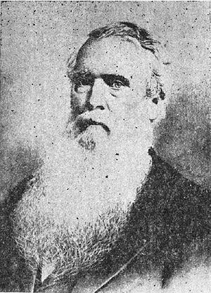
长老会在广州的传教事业一度中断。
1860年，哈巴安德重返广州，1862年建立一支会（逢源堂前身），1872年建立二支会（仁济堂前身），1881年建立三支会（中华堂前身）、四支会（双门底福音堂），1891年建立五支会（芳村堂前身）、养济支会及黄沙堂。
此外还创办柔济女医院（柔济医院前身）、端拿护士学校、夏葛女医学校、疯人病院(市精神病院前身)、明心书院(专收失明儿童)、真光书院(真光女子中学前身)、培英学校(培英中学前身)、格致书院(岭南大学前身)等。
1865年，哈巴安德在广州同文馆担任英文教习。1887年，哈巴安德在广州沙基金利埠（今六二三路）创办格致书院，1888年3月28日开学，并回美国募集10万美元作为办学经费，该校在1907年发展成岭南学堂，即后来的岭南大学。
1891年，哈巴安德因病返回美国，1894年去世。
1849年，哈巴安德出版《天文问答》一书，是最早向中国介绍近代天文学科普读物。1879年，哈巴安德出版《北京访问记》，1880-1884年间主编《教务杂志》。
钟荣光（1866—1942），字惺可，广东中山市小榄镇人。
钟氏早年中举，精于八股，后担任格致书院汉文总教习，开始学习西学，经历与蔡元培颇多相似。
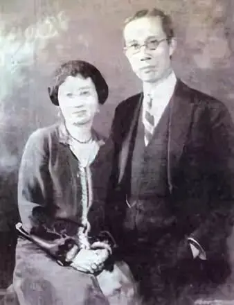
著名教育家，岭南大学首任华人校长。
1894年中举人，以擅长八股文闻名于时，后入兴中会，创办《博闻报》、《可报》等报刊宣传革命，参与反清革命活动。
1899年受聘为美国教会学校——广州格致书院(岭南大学前身)汉文教习。后出任岭南学堂教务长、岭南大学董事会主席，1928年岭南大学收归国人自办，任第一校长。
次年改任岭南大学荣誉校长。主管岭大期间，创办岭南农科大学、岭南工学院、商学院、孙逸仙医学院。1942年在香港病逝。
燕京大学纪录片 1
燕京大学纪录片 2
燕京大学纪录片 3
这里没有挑逗你眼目情欲的小鲜肉
也没有挑动你肉体情欲的段子
更没有膨胀你今生骄傲的鸡血
我们只在乎那些最质朴真诚的作品
在那里我们才能恢复真正的想象力
我们也坚信这才是我们真正需要的

ID:Six_hundred_hits
长按二维码，一键关注
【六百击】
-END-
电影评论
尽情分享朋友圈

苹果打赏通道
小提示：文末广告是腾讯配送广告，内容与本号无关，但您的每次点击（无需反复点）都会给平台带来几毛收益，欢迎您点击支持六百击。